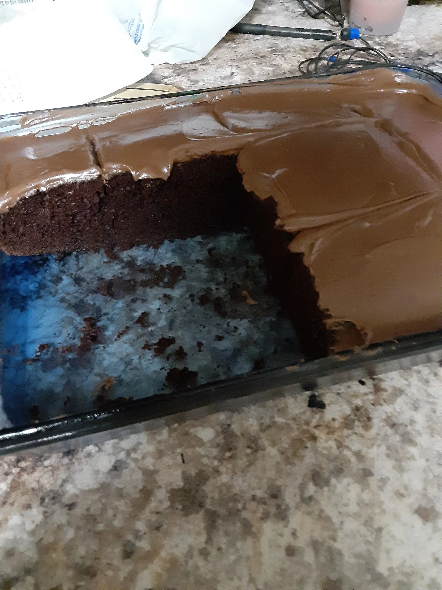

Chocolate cake

Description
A chocolate cake will take 10 minutes to prepare,
plus 40 minutes to cook, taking 50 minutes in
total. It serves 48 pieces.
Ingredients
- 1 cup butter
- 2 cups white sugar
- 2 eggs
- 1 cup buttermilk
- ½ cup unsweetened cocoa powder
- 2 ½ cups all-purpose flour
- 2 teaspoons baking soda
- ½ teaspoon salt
- 1 cup boiling water
Steps
- Preheat oven to 350 degrees F (175 degrees C). If using layers, grease and line the pans with parchment paper. If using a 9 X 13 pan, grease and dust with cocoa powder. Sift together the cocoa, flour, baking soda and salt. Set aside.
- In a large bowl, cream together the butter and sugar until light and fluffy. Beat in the eggs one at a time. Alternately beat in the flour mixture and the buttermilk, mixing just until incorporated. Add the boiling water and beat for one full minute.
- Bake in the preheated oven for 30 to 40 minutes, or until a toothpick inserted into the center of the cake comes out clean. Allow to cool.